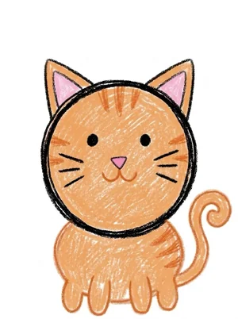
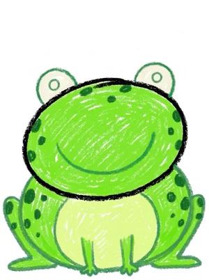
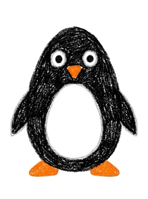
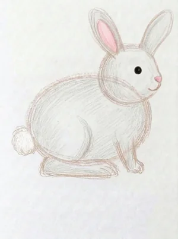
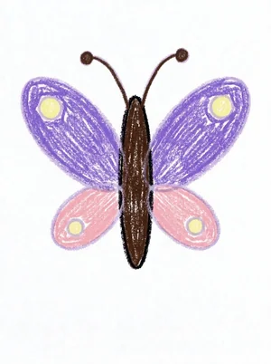
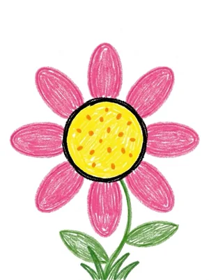
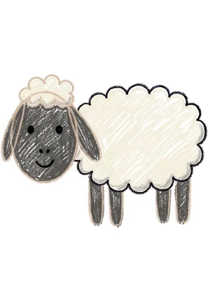
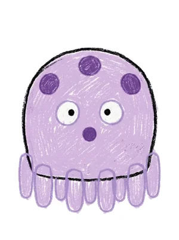
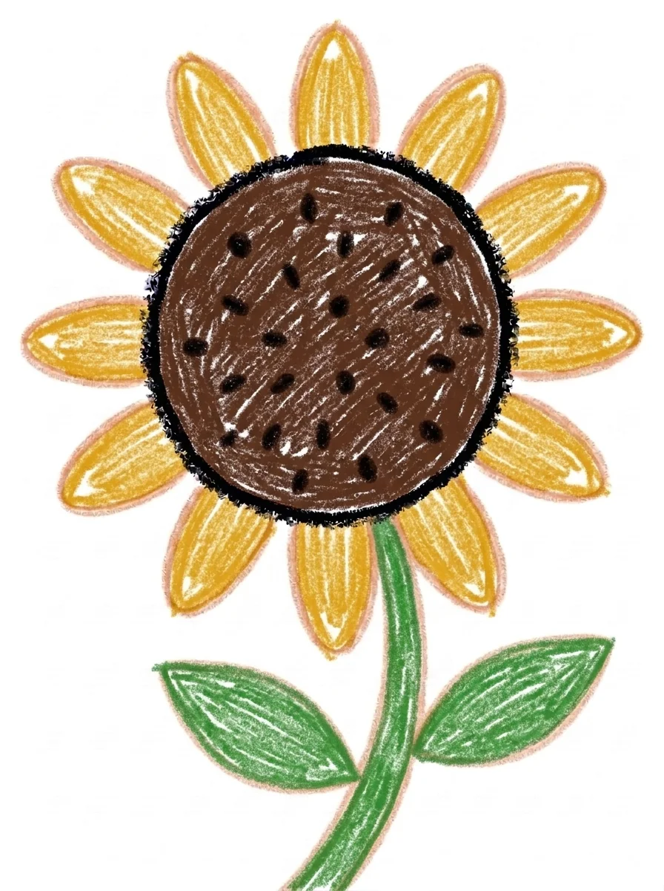

Cute and Easy Drawings for Kids 24 Free Step-by-Step Tutorials
When a child asks for cute and easy drawings, they mean subjects that look adorable and actually get finished. These 24 tutorials are the gentlest ones we have — most of them start with a circle or an oval, add a few friendly details, and end with a drawing worth taping to the fridge. Free printable PDF with each one. No signup needed.
Last updated:
Quick Answer
Yes — this page collects 24 free cute and easy drawings for kids ages 3 and up, from the cat and the frog to the butterfly and the unicorn. Each tutorial breaks its subject into 6 simple steps with a free printable PDF. If your child is new to drawing, start with the cat, the frog or the penguin — one round shape each.
At a Glance
- Tutorials: 24 cute and easy drawings
- Ages: 3+
- Steps: 6 per tutorial
- Format: On screen + free PDF
- Cost: Free, no signup
- Supplies: Paper, crayons
🐱 The Cute and Easy Collection
Every drawing below was picked to be one of the cute drawings easy to draw with nothing but paper and crayons — tap one to open its step-by-step tutorial with a free printable. They sit roughly in starter order, simplest shapes first, so a brand-new drawer can begin at the top and work down.

🐱 Cat
One round face, two triangle ears — the friendliest first drawing there is.

🐸 Frog
One oval, two eye bumps. Quite possibly the easiest win on this page.

🐧 Penguin
A single egg shape does most of the work — belly, beak, done.

🐰 Bunny
A round face and two long ears. That is nearly the whole drawing.

🦋 Butterfly
Two wing shapes mirrored — the symmetry does the cute for you.


🌸 Flower
A circle in the middle and petal loops all the way around it.

🐑 Sheep
The body is just a cloud of circles — there is no wrong way to fluff it.

🐙 Octopus
A round head and eight wavy lines — counting practice included.

🌻 Sunflower
Like the flower, only bigger and sunnier — the petals are just ovals.
🌸 Why These 24 Made the Easy List
Most cute and easy drawings share a recipe: one round main shape, a face early, and very few details. Round shapes come first because little hands draw circles and ovals long before they manage corners — so the cat is a round face with triangle ears, the penguin is a single egg shape, and the sheep's body is literally a cloud of circles. There is no wrong way to draw any of them, and a wobbly line still reads as cute.
The face goes on early, too. Eyes and a smile are what make a drawing feel alive to a child, so these tutorials front-load them — the drawing already looks like a friend by step three, which keeps small artists going to step six. Details stay minimal on purpose: stripes on the bee, spots on the cow, a splash on the whale. One signature detail each, nothing fiddly.
This page is a shortlist, not the whole library. We went through all 76 tutorials and kept the 24 that a beginner can finish in about five minutes. The rest — the dragon, the castle, the Eiffel Tower — are waiting in the full drawing tutorials hub for when your child is ready for a bigger project.
✏️ Tips for a First Cute Drawing
- Start with the cat, the frog or the penguin. One main shape each. A finished first drawing matters more than an ambitious half-finished one.
- Use a big sheet of paper. Small hands need room. A drawing that fills the page feels like an achievement all by itself.
- Draw on your own paper, not theirs. If they ask for help, show the step beside them instead of correcting their page. Ownership is what brings them back for a second drawing.
- Let the colours be wrong. A purple frog and a pink whale are still a frog and a whale. The goal is a simple cute drawing they are proud of, not a realistic one.
- Display it the same day. Fridge, bedroom wall, photo to grandma — a drawing that gets seen is a drawing that gets repeated.
🔗 Keep Exploring
Finished the easy list? Here is where to go next — the full hub, the cool set, and the Christmas collection:
✏️ All 76 Drawing Tutorials
Every step-by-step tutorial in one place — animals, nature, vehicles and characters, each with a free printable. Browse all drawing tutorials.
😎 Cool Drawings
Ready for a step up? Twelve tutorials with a bit more wow — shark, dinosaur, unicorn, skull and more. See cool drawings.
🎄 Christmas Drawings
Six festive tutorials — tree, Santa, reindeer, snowman, ornament and gingerbread man. Draw Christmas.
❓ Cute and Easy Drawings FAQ
What are the best cute and easy drawings for beginners?
Start with the cat, the frog or the penguin. Each one is built from a single round shape with two or three details added, so a beginner finishes in minutes and actually wants a second turn. The star and the fish are the next step up — still simple shapes, with one new skill each (straight lines, then a triangle tail).
Where can I find cute drawings easy to draw for my child?
Right here — this page collects the 24 gentlest tutorials on MomYouNeedThis in one place. Most of them start with a circle or an oval, add just a few details, and leave nothing fiddly for small hands — that is what makes each one a cute drawing that is easy to draw. If your child wants more after these, the full hub has 76 step-by-step tutorials in the same format.
What is a simple cute drawing my 4-year-old can actually finish?
The frog. A simple cute drawing for a young child needs one main shape, and the frog is a single oval with two eye bumps on top — most 4-year-olds finish it in about five minutes. The star is the other confidence-builder: five straight lines, and it looks right even when the lines wobble.
Are these cute and easy drawings really free?
Yes — every tutorial on this page is free from MomYouNeedThis, including the printable PDF on each tutorial page. No signup, no cost, no trial.
Do I need to print the tutorials?
No — every tutorial works on screen, and each step shows exactly what to add next. The printable PDF on each tutorial page is a bonus if your child likes a sheet to draw along with, or if you want to build a little drawing book of their favourites.